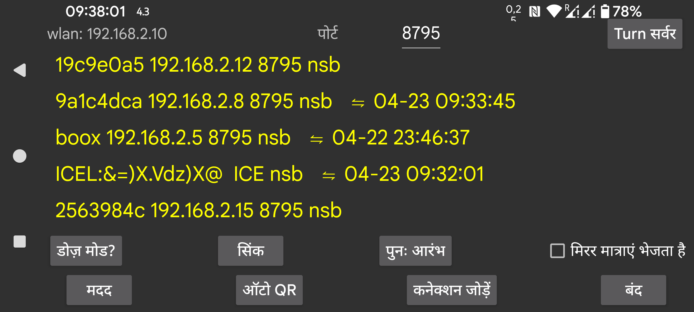

ar be de es fr hi it nl pl pt ru sv tr uk uz zh en
किसी अन्य डिवाइस को डेटा भेजें या प्राप्त करें। आप Juggluco चलाने वाले एक Android डिवाइस से कनेक्ट कर सकते हैं ताकि यहाँ की तरह डेटा प्रदर्शित किया जा सके। स्कैन डेटा प्राप्त करने के बाद, मिरर डिवाइस भी ब्लूटूथ के माध्यम से सेंसर से संपर्क कर सकता है। यह सुनिश्चित करने के लिए कि डिवाइस में से केवल एक ही सेंसर से संपर्क करे, "बायां मेन्यू->सेंसर->ब्लूटूथ का उपयोग" स्वचालित रूप से बंद हो जाता है जब स्ट्रीम मान IP/TCP के माध्यम से आते हैं।
इस स्क्रीन पर, wlan के बाद, इस डिवाइस का स्थानीय wlan IP दिखाया जाता है, आपको इसे उस दूसरे डिवाइस पर निर्दिष्ट करना चाहिए जिससे आप अपने होम नेटवर्क पर कनेक्ट हो रहे हैं (या दूरस्थ रूप से कनेक्ट होने पर अपने मॉडेम पर)।
पोर्ट के बाद, आप उस TCP पोर्ट को बदल सकते हैं जिस पर यह ऐप कनेक्शन के लिए सुन रहा है।
कनेक्शन जोड़ें पर क्लिक करके आप निर्दिष्ट कर सकते हैं कि किन होस्ट से कनेक्ट करना है और कैसे कनेक्ट करना है।
एक विश्वसनीय नेटवर्क कनेक्शन Android पर सभी प्रकार के बैटरी ऑप्टिमाइज़ेशन और पृष्ठभूमि प्रतिबंधों से बाधित होता है, डोज़ मोड दबाना आपको इसे बदलने में मदद करता है।
यदि Juggluco एक मिरर ऐप के रूप में कार्य करता है (Juggluco चलाने वाले किसी अन्य डिवाइस से ग्लूकोज मान प्राप्त करना), तो आप एक डायलॉग पर पहुंचने के लिए अलार्म दबा सकते हैं जहाँ आप कम और अधिक ग्लूकोज अलार्म और संबंधित सूचनाएं निर्दिष्ट कर सकते हैं।
मिरर मात्राएं भेजता है: यदि ऐप किसी अन्य डिवाइस पर चल रहे इस ऐप से दवा, भोजन और खेल डेटा की मात्राएं प्राप्त करता है, तो आपको यहाँ वही जानकारी जोड़नी या संशोधित नहीं करनी चाहिए। इसे चेक करना इसे असंभव बना देता है।
सिंक उपलब्ध होने पर कनेक्टेड डिवाइस को नया डेटा भेजता है या नए डेटा के लिए पूछता है।
पुनः आरंभ: मौजूदा कनेक्शन को बंद करता है और एक नया कनेक्शन बनाता है।
ऑटो QR: इस फोन से Juggluco पर किसी अन्य को सभी डेटा भेजने के लिए एक कनेक्शन उत्पन्न करता है। दूसरे फोन को बाएं मेन्यू → फोटो से QR कोड स्कैन करना होगा।
वाई-फाई (केवल WearOS पर): सेट न होने पर बैटरी जीवन बचाने के लिए WearOS द्वारा कुछ समय बाद WIFI स्वचालित रूप से बंद कर दिया जाता है और Juggluco फोन और घड़ी के बीच कनेक्शन के लिए ब्लूटूथ के उपयोग पर स्विच करता है। जब यह चालू होता है, तो WearOS से WIFI को चालू रखने के लिए कहा जाता है और इसे बंद होने में अधिक समय लगेगा, पर फिर भी यह हो सकता है। इस विकल्प को सेट करना सामान्यतः आवश्यक नहीं है और WearOS के निर्माता सोचते हैं कि WIFI चालू करने से बैटरी उपयोग में बड़ी वृद्धि होगी।
मौजूदा कनेक्शन एक सूची में दिखाए जाते हैं, लेबल, IP पोर्ट और अंतिम सफल सिंक का महीना, दिन और समय दिखाया जाता है।
कनेक्शन का उपयोग कैसे किया जाता है इसे निम्नानुसार संक्षिप्त किया गया है:
n: मात्राएं (संख्याएं)
s: स्कैन
b: स्ट्रीम (ब्लूटूथ)
r: प्राप्त करें
मिरर कनेक्शन के बारे में अधिक जानकारी के लिए "कनेक्शन जोड़ें" के तहत मदद पढ़ें और https://www.juggluco.nl/Juggluco/index.html#mirror देखें
आप एक Android Emulator (उदाहरण के लिए Genymotion) की मदद से एक Windows, Macintosh या Linux कंप्यूटर पर Android Juggluco ऐप चला सकते हैं। यदि आप Linux का उपयोग करते हैं (उदाहरण के लिए MS Windows के तहत Ubuntu), तो आप Waydroid का भी उपयोग कर सकते हैं। एमुलेटर पर Juggluco सेंसर से जुड़े Android फोन से मिरर कनेक्शन के माध्यम से डेटा प्राप्त करता है। Android Studio Android एमुलेटर और Genymotion के तहत, पिंच मूवमेंट (दो उंगलियों को एक दूसरे की ओर या एक दूसरे से दूर ले जाना) को माउस पॉइंटर को हिलाते समय Control कुंजी दबाकर सिमुलेट किया जा सकता है। Waydroid इसका समर्थन नहीं करता, पर Juggluco इसे स्वयं अपने लिए लागू करता है।